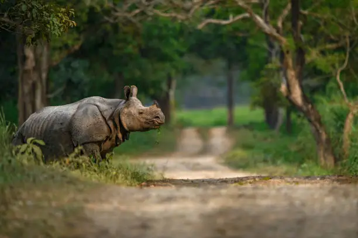
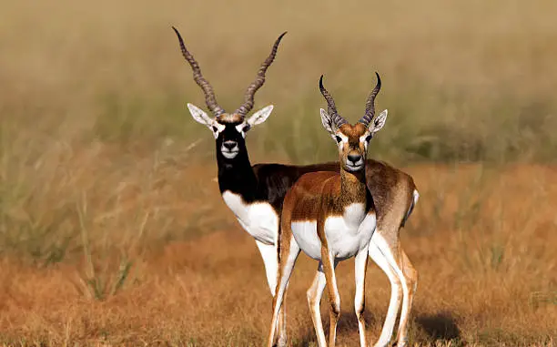

Welcome to Pench National Park, a breathtaking wildlife sanctuary located in Madhya Pradesh, India. Spanning 758 square kilometers, this park is renowned for its lush deciduous forests, diverse wildlife, and picturesque landscapes. Home to majestic tigers, leopards, and numerous bird species, Pench offers an unforgettable experience for nature lovers and wildlife enthusiasts. With its enchanting scenery and rich biodiversity, it also inspired Rudyard Kipling's "The Jungle Book." Whether you're on a thrilling safari or exploring nature trails, Pench National Park invites you to connect with the wonders of the natural world.
About
Pench National Park, located in Madhya Pradesh, India, is a stunning wildlife sanctuary known for its rich biodiversity and beautiful landscapes. Spanning approximately 758 square kilometers, it features a mix of deciduous forests, grassy meadows, and the Pench River, which meanders through the area.
The park is home to a diverse array of wildlife, including tigers, leopards, and various species of deer, making it a prime destination for wildlife enthusiasts. Birdwatchers also flock to Pench to spot a wide range of avian species. The vegetation is primarily composed of teak and sal trees, creating a vibrant ecosystem.
Pench is not only significant for its natural beauty but also for its cultural connections; it is said to have inspired Rudyard Kipling's "The Jungle Book." The best time to visit is from October to June, when visitors can enjoy safaris, nature trails, and the serene environment. Overall, Pench National Park is a fantastic spot for those looking to immerse themselves in nature and experience the thrill of wildlife in their natural habitat.
Gallery
Image 1: A majestic tiger in its natural habitat
Image 2: A stunning sunset over the Pench River

Image 3: A group of deer grazing in the forest
Image 4: A bird perched on a tree branch
Image 5: A scenic view of the forest

Image 6: A leopard in the forest
Image 7: A serene lake in the forest
Image 6: A majestic elephant in the forest
Safari Timings
In Pench National Park, safari timings generally follow this schedule:
Morning Safari: 6:00 AM to 10:00 AM
Afternoon Safari: 3:00 PM to 6:00 PM
These timings may vary based on the season, so it's best to check in advance for any updates or changes. Booking in advance is recommended to secure your spot, especially during peak tourist seasons. Enjoy your adventure!
FAQs
1. What is the best time to visit Pench National Park?
The best time to visit is from October to June. During these months, the weather is pleasant, and wildlife sightings are more frequent.
2. How do I reach Pench National Park?
Pench National Park can be accessed by road. The nearest major airports are Nagpur (about 90 km away) and Jabalpur (about 200 km away). The park is also well-connected by rail, with nearby railway stations at Seoni and Nagpur.
3. Are safaris allowed in the park?
Yes, safaris are a popular way to explore Pench National Park. Both jeep and elephant safaris are available, and it's advisable to book in advance.
4. What wildlife can I expect to see?
Visitors can see tigers, leopards, Indian deer, wild boar, and a variety of birds. The park is rich in biodiversity, making it an exciting destination for wildlife enthusiasts.
5. Is accommodation available inside the park?
Yes, there are several options for accommodation within and around the park, ranging from luxury resorts to budget lodges. It's best to book in advance, especially during peak seasons.